ノーマルマップ
ノーマルマップについて、そしてノーマルマップの使い方について学びましょう。
ノーマルマップとは、オブジェクト表面の細かい凹凸を表現するための特殊なテクスチャーです。
オブジェクト表面の細かい凹凸を全てポリゴンで表現しようとすると、あっという間に数千万～数億ポリゴンになってしまい、リアルタイムで描画できなくなってしまいます。
そこで、ポリゴンの数を増やさずに表面の細かい凹凸を表現するために編み出された技術がノーマルマップです。

物体表面の向き（法線の向き）を、ノーマルマップと呼ばれるテクスチャー画像に書き込みます。
具体的には、法線ベクトルのX, Y, Zを画像の色情報（R, G, B）に格納します。
このとき、法線ベクトルを表現する座標空間は、オブジェクト空間ではありません。面に沿った座標空間になります。
この座標空間のことを接空間（Tangent Space）と呼びます。
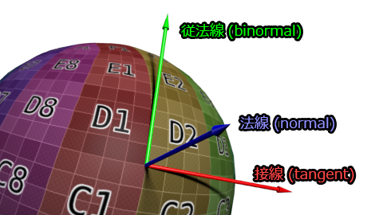
引用：http://www.opengl-tutorial.org/jp/intermediate-tutorials/tutorial-13-normal-mapping/
赤矢印がX軸、緑矢印がY軸、青矢印がZ軸です。
表面に凹凸が無く平らである場合、面の法線は上図の青い矢印と同じ向きになります。
法線ベクトルのX, Y, Zそれぞれをノーマルマップ画像のピクセル（RGB）に格納すると、(0.5, 0.5, 1)となります。
大抵、法線ベクトルはそれに近い値になるため、ノーマルマップは全体的に水色っぽい画像になるというわけです。
なぜ、X(R)とY(G)が0ではなく0.5なのかというと、画像の色情報は0～255までしか格納できない（マイナスの値は格納できない）ため、0.5を中心とするように下駄が履かされています。つまり、ノーマルマップ上の0.5は実質0です。
ちなみに、上図の赤矢印を接線（Tangent）と呼び、緑矢印を従法線（Binormal）と呼びます。
一般的に、接線はUV座標のU方向、従法線はV方向とします。
ノーマルマップの作り方は主に3種類です。
ちなみに、上記の砂利の地面のノーマルマップは、3番の「実写写真からツールで生成する」という手法で作られました。本山が地面の写真をデジカメで撮影し、CRAZYBUMPという有料ソフトを使って作りました。
地面の写真↓
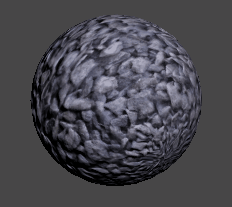
ノーマルマップをシェーディングに反映させてみましょう。
けっこう難しいので、頑張ってついてきてくください！
このノーマルマップ画像を右クリックで保存してください。
Unityのプロジェクトにインポートします。
設定をNormal Mapにします。
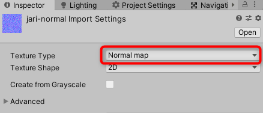
Shader "MyShader/NormalMap"
{
Properties
{
_NormalMap("Normal Map", 2D) = "bump" {}
}
SubShader
{
Pass
{
CGPROGRAM
#pragma vertex vert
#pragma fragment frag
#include "UnityCG.cginc"
struct appdata
{
float4 vertex : POSITION;
float2 uv : TEXCOORD0;
};
struct v2f
{
float4 vertex : SV_POSITION;
float2 uv : TEXCOORD0;
};
sampler2D _NormalMap;
v2f vert(appdata v)
{
v2f o;
// オブジェクト空間の頂点座標をクリップ空間に変換
o.vertex = UnityObjectToClipPos(v.vertex);
// UV座標はそのまま出力構造体に渡す
o.uv = v.uv;
return o;
}
float4 frag(v2f i) : SV_Target
{
// ノーマルマップの内容を取得
float3 normalMap = tex2D(_NormalMap, i.uv);
// ノーマルマップの内容をそのまま色として出力
return float4(normalMap, 1);
}
ENDCG
}
}
}
マテリアルを作成し、このシェーダーをマテリアルにセットし、オブジェクトに適用してみてください。
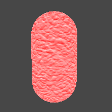
ノーマルマップが表面に反映されるものの、なぜか赤くなってしまいます（実行環境によっては赤くならないかもしれません）。
この理由は、Unityがノーマルマップを自動的にDXT5nmというフォーマットに変換するからです。これにより、容量が削減され、メモリが節約できます。テクスチャは、解像度によっては、1枚で数十MBになりますからね。
で、このままだと法線として使えないので、元の形式に戻す必要があります。次のようにします。
float4 frag(v2f i) : SV_Target
{
// ノーマルマップの内容を取得
float3 normalMap = UnpackNormal(tex2D(_NormalMap, i.uv));
// ノーマルマップの内容をそのまま色として出力
return float4(normalMap, 1);
}
UnpackNormal()はUnityの組み込み関数で、ノーマルマップに格納された法線ベクトルの情報を使いやすい形に戻します。
R, G, B (X, Y, Z)の各要素がそれぞれ -1～1 に変換されます。
0～1ではなく、-1～1です。そのため、元のノーマルマップ画像よりも濃い青になります。
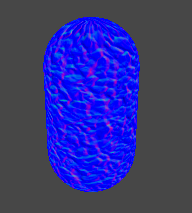
ノーマルマップの内容を読み取ることはできましたが、ノーマルマップから読み取った現状の法線は、接空間のものです。
これをシェーディングに使用するためには、どうすれば良いでしょうか？
以下のような方法が考えられます。
今回は、2番の「接空間の法線ベクトルをワールド空間に変換して、ワールド空間でライトの計算を行う」でいきましょう。
Shader "MyShader/NormalMap"
{
Properties
{
_NormalMap("Normal Map", 2D) = "bump" {}
}
SubShader
{
Pass
{
CGPROGRAM
#pragma vertex vert
#pragma fragment frag
#include "UnityCG.cginc"
struct appdata
{
float4 vertex : POSITION;
float2 uv : TEXCOORD0;
float3 normal : NORMAL; // 頂点の法線
float4 tangent : TANGENT; // 頂点の接線
};
struct v2f
{
float4 vertex : SV_POSITION;
float2 uv : TEXCOORD0;
float3 normal : TEXCOORD1; // 頂点の法線
float3 tangent : TEXCOORD2; // 頂点の接線
float3 binormal : TEXCOORD3; // 頂点の従法線
};
sampler2D _NormalMap;
v2f vert(appdata v)
{
v2f o;
// オブジェクト空間の頂点座標をクリップ空間に変換
o.vertex = UnityObjectToClipPos(v.vertex);
// UV座標はそのまま出力構造体に渡す
o.uv = v.uv;
// 法線をワールド空間に変換
o.normal = UnityObjectToWorldNormal(v.normal);
// 接線をワールド空間に変換
o.tangent = UnityObjectToWorldDir(v.tangent.xyz);
// 法線と接線の外積から従法線を求める
o.binormal = normalize(cross(o.normal.xyz, o.tangent.xyz));
// 環境による従法線の向きの違いを修正
o.binormal *= v.tangent.w * unity_WorldTransformParams.w;
return o;
}
float4 frag(v2f i) : SV_Target
{
// ノーマルマップの内容を取得
float3 normalMap = UnpackNormal(tex2D(_NormalMap, i.uv));
// ノーマルマップから読み取った法線ベクトル（接空間）をワールド空間に変換する
float3 worldNormal = (i.tangent * normalMap.x) + (i.binormal * normalMap.y) + (i.normal * normalMap.z);
// ワールド空間に変換した法線ベクトルをそのまま色として出力
return float4(worldNormal, 1);
}
ENDCG
}
}
}
まず、頂点シェーダーの入力構造体について説明します。
struct appdata
{
float4 vertex : POSITION;
float2 uv : TEXCOORD0;
float3 normal : NORMAL; // 頂点の法線
float4 tangent : TANGENT; // 頂点の接線
};
頂点の法線と接線を取得するようにしました。
NORMALセマンティクスで法線、TANGENTセマンティクスで接線がしゅとくできます。
法線、接線、従法線はモデリングの時点で決まるので、頂点入力データとして受け取ることができます。
ただし、従法線に関しては、Unityでは、マルチプラットフォーム対応の関係で取得できないようです。
従法線はシェーダープログラム内で導出する必要があります。
次は頂点シェーダーからフラグメントシェーダーに情報を受け渡すv2f構造体について。
struct v2f
{
float4 vertex : SV_POSITION;
float2 uv : TEXCOORD0;
float3 normal : TEXCOORD1; // 頂点の法線
float3 tangent : TEXCOORD2; // 頂点の接線
float3 binormal : TEXCOORD3; // 頂点の従法線
};
頂点シェーダーで法線、接線、従法線をワールド空間に変換したいので、変換後の情報をフラグメントシェーダーに渡すために、項目を追加しました。
セマンティクスのTEXCOORD1～TEXCOORD3に深い意味はありません。なんならCOLOR0やCOLOR1を指定しても大丈夫です。とにかく、重複しないように何らかのセマンティクスを指定する必要があります。
次は頂点シェーダーを見ていきましょう。
// 法線をワールド空間に変換
o.normal = UnityObjectToWorldNormal(v.normal);
// 接線をワールド空間に変換
o.tangent = UnityObjectToWorldDir(v.tangent.xyz);
オブジェクト空間の法線をワールド空間に変換する箇所は以前もやった通りなので解説は割愛します。
接線をワールド空間に変換する箇所は、法線の処理と似ていますが、UnityObjectToWorldNormal()ではなくUnityObjectToWorldDir()という関数を使っています。
この2つの関数の働きはとても似ていて、もしオブジェクトがスケールしていないか、もしくは軸ごとのスケール値が等しい場合は、2つの関数はまったく同じ結果になります。
軸ごとにスケール値が異なる場合にのみ違いが出てきます。UnityObjectToWorldDir()を使って法線の向きを変換すると、軸ごとにスケール値が異なる場合に不正な結果となってしまうのです。
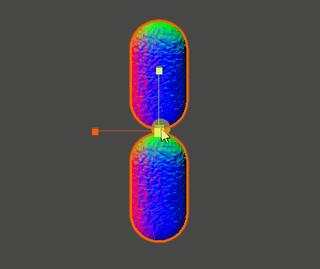
↑上がUnityObjectToWorldNormal()で法線を変換したシェーダー、下がUnityObjectToWorldDir()で法線を変換したシェーダーです。
このように、軸ごとのスケール値が等しい場合は、どちらを使っても同じ結果になります。
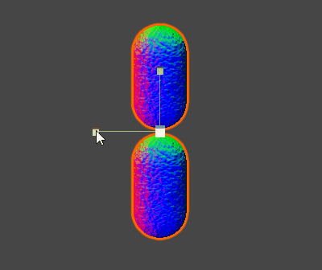
しかし、軸ごとのスケール値が異なる場合、このように、結果が異なってしまいます。上のUnityObjectToWorldNormal()を使っているほうが正しい結果です。
ちなみに、UnityObjectToWorldNormal()よりUnityObjectToWorldDir()のほうが計算が単純で負荷が低いため、軸ごとに異なるスケール値を設定しないことがわかっている場合は、あえてUnityObjectToWorldDir()を使うことで軽量化が図れます。
（軸ごとにスケール値を変えると見栄えが悪くなるため、普通はあまりやらないと思います。つまり大抵はUnityObjectToWorldDir()でも問題ない）
従法線を求めるプログラムを見てみましょう。
// 法線と接線の外積から従法線を求める
o.binormal = normalize(cross(o.normal.xyz, o.tangent.xyz));
cross()はベクトルの外積を計算する組み込み関数です。ベクトルの外積は、2つのベクトルから1つのベクトルを求める計算です。結果のベクトルは、元の2つのベクトル両方と直行するという特徴があります。
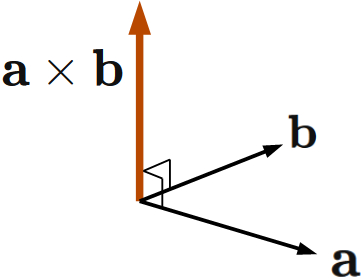
引用：https://risalc.info/src/vector-product-orthogonal.html
法線、接線、従法線はそれぞれ直行してます。そのため、cross()で法線（上図の青）と接線（上図の赤）の外積を計算すると、従法線が導き出されます。
それを補正するための値が、Unityによってv.tangent.wとunity_WorldTransformParams.wに格納されています。これらの変数には、実行環境に応じて-1か+1が格納されており、それを従法線にかけることで、正しい向きにすることができます。
// 環境による従法線の向きの違いを修正
o.binormal *= v.tangent.w * unity_WorldTransformParams.w;
※なぜ、2つもかけないといけないのかは、よくわかっていません…
次はフラグメントシェーダーです。
// ノーマルマップから読み取った法線ベクトル（接空間）をワールド空間に変換する
float3 worldNormal = (i.tangent * normalMap.x) + (i.binormal * normalMap.y) + (i.normal * normalMap.z);
ここで、接空間の法線ベクトルをワールド空間に変換しています。
ノーマルマップに格納された法線ベクトルは、接空間のX軸（接線）、Y軸（従法線）、Z軸（法線）を使って表現されたベクトルです。
そして、今回、接空間のX軸、Y軸、Z軸をワールド空間に変換したベクトルは算出済みです（それぞれ、i.tangent、i.binormal、i.normal）。
ノーマルマップに格納された法線ベクトルのX, Y, Zの値は、各軸に対する量を表しているので、法線ベクトルのX, Y, Zをワールド空間に変換済みのX軸、Y軸、Z軸にかけてあげれば、ワールド空間に変換されます。
ネットなどで調べると、接空間の法線ベクトルをワールド空間に変換するために、変換行列を使うサンプルコードが多く出てきますが、変換行列を使うより、こちらの方法のほうが単純で高速です。
以上で、ワールド空間の法線ベクトルが取得できました。
オブジェクトをぐるぐる回転させて、正しくワールド空間の法線となっていることを確認しましょう。
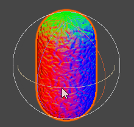
ワールド空間にまで変換できれば、あとは以前シェーディングのところで学んだ手法で、シェーディングを行うことができます！
ランバードシェーディングを適用してください。
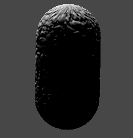
ブリンフォンモデルによるスペキュラーを適用してください。
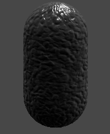
※↑スペキュラーの効果がわかりやすいように、ランバートの効果を調整しています。
カラーテクスチャーも適用してください。
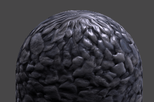このテクスチャーを使ってください↓